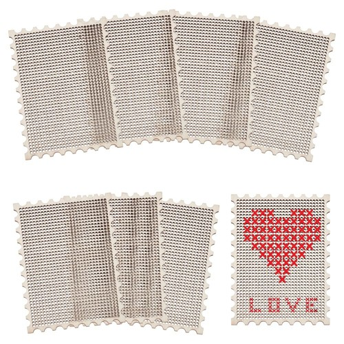
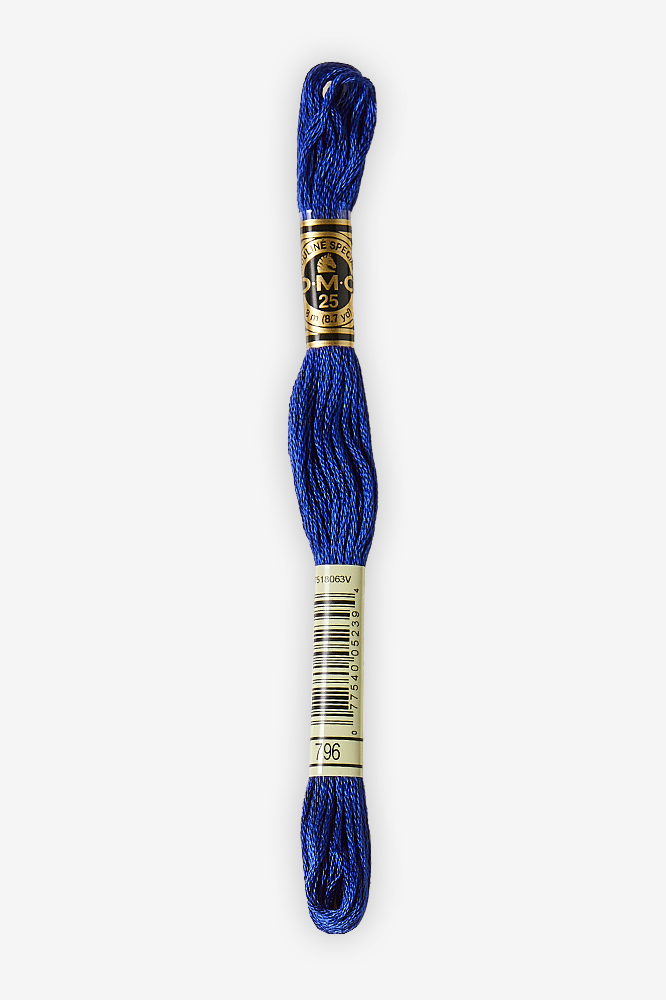
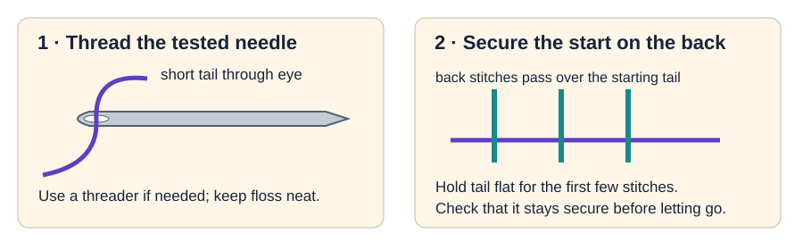
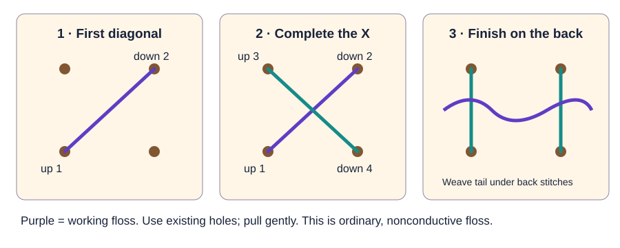
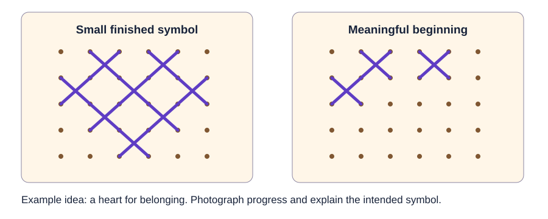

DMC cross-stitch video
A beginner demonstration of threading and cross stitch. It uses fabric; our station uses existing holes in inspected wooden blanks, ordinary floss, and no hoop.
Open DMC cross-stitch video →Mentor preparation · Thursday, September 24
Prepare ordinary floss, inspected wooden blanks, and a small stitched symbol students can begin in 25 minutes.
Jennifer leads Wearables; assign a trained adult to the live needle station. Plan for 18 students, with only the number of simultaneous seats the adult can supervise.
| Material | Prepare | Check |
|---|---|---|
| Wooden blanks | 40 requested; release 18 plus inspected spares | Inspect cracks, splinters, edges, and every working hole. Requested quantities are not a receipt count. |
| Ordinary embroidery floss | Two BYMORE kits; choose 1–3 colors per student | Pre-cut short lengths. Test strand thickness with the actual needle eye and holes; do not assume all six strands will fit. |
| Needles, threaders, snips | One tested needle per active seat; counted spares | A counted landing tray or pincushion; mentor-controlled snips. Record issued and returned needles. |
| Storage and planning | 18 named snack bags, planning cards, pencils | Print a simple hole-grid plan or use the blank as a visual reference. Stage paper-grid backups. |
| Teaching and evidence | One finished sample, one in-progress sample, iPads | Stage the student page and a clear sample caption. |
Product/reference photos, not our delivered inventory. Tap a photo to enlarge it. Compare the actual labels and kit list; appearance alone does not confirm electrical compatibility. These optional photos stay out of printouts.

Perforated stamp-shaped wooden blanks. FREEBLOSS reference photo; compare the delivered hole pattern and inspect the edges.
Photo: FREEBLOSS listing on eBay
Colored decorative strands for Future Stamp. DMC example; our order lists BYMORE floss. Not conductive thread.
Photo: DMC
Metal needles with an eye at one end. Example set; test the ordered JNENERY needle with the actual thread and holes.
Photo: SparkFun
Colored handle with a thin wire loop. The ordered TOOVREN tool helps pull thread through the eye.
Photo: Amazon product listing


A beginner demonstration of threading and cross stitch. It uses fabric; our station uses existing holes in inspected wooden blanks, ordinary floss, and no hoop.
Open DMC cross-stitch video →Helpful guidance for planning a small stitched area and keeping the back tidy. Rehearse our wooden-blank start and finish before teaching.
Open DMC illustrated starting guide →| Minutes | Mentor move | Student evidence |
|---|---|---|
| 0–5 | Name bags; choose a future need and a 6–12-stitch symbol. | “My symbol represents ___.” |
| 5–7 | Issue inspected blank, tested floss, and one counted needle. | Point to the plan and starting hole. |
| 7–17 | Model one stitch; coach gentle tension and a small scope. | Complete or meaningfully begin the motif. |
| 17–22 | Inspect and secure tails; help photograph honest progress. | Clear front photo + “because ___.” |
| 22–25 | Bag blank, plan, and floss; collect needles separately. | All issued needles returned and counted. |
| If you see… | Do this |
|---|---|
| Needle or threaded eye will not pass | Stop. Swap to the pretested combination or paper-grid task; never force it. |
| Tangling | Shorten the working length and let the thread untwist while the needle stays controlled. |
| Too much design for the time | Circle the strongest feature; stitch that. Accept an intentional beginning. |
| Lost needle, crack, or splinter | Pause the station. Account for the needle or isolate the blank before resuming. |
Print: one mentor guide per station lead, one station card from the existing station pack, and one opening/closing sheet for the lead.